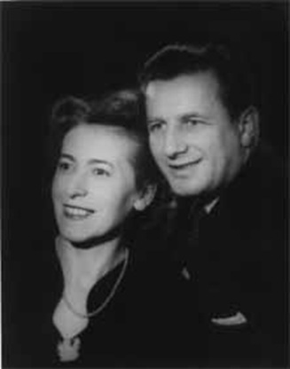

Teresa Aniela Trojanowska och Kazimierz Tadeusz Matuszak träffades i Öreryd i Sverige den 17 december 1945, efter att de kommit till Sverige som krigsflyktingar från Polen. De förlovade sig den 4 mars 1946 och gifte sig den 25 augusti samma år.
När de bodde i Fagersjö fick Teresa veta att hon var med barn - tvillingar. Barnen föddes den 30 juli 1947. De bodde tillsammans med föräldrarna en tid i Tullinge i "Vita villorna". Sedan placerades barnen i fosterhem hos paret Blomqvist, eftersom både Teresa och Kazimierz var fullt sysselsatta med arbete och studier. Teresas hjärta blödde, men det fanns ingen annan utväg då.
Senare bodde familjen tillsammans i Tumba och till slut i villan i Örby i Stockholm.